Apisense BOX · Instrukcja montażuApisense BOX · Assembly instructionApisense BOX · MontageanleitungApisense BOX · Guide de montageApisense BOX · Guía de montajeApisense BOX · Istruzioni di montaggioApisense BOX · MonteringsanvisningApisense BOX · Montaj kılavuzuApisense BOX · Návod k montážiApisense BOX · Návod na montážApisense BOX · Szerelési útmutatóApisense BOX · Upute za montažuApisense BOX · Instrucțiuni de montajApisense BOX · AsennusohjeApisense BOX · MontagehandleidingApisense BOX · MonteringsanvisningApisense BOX · MonteringsvejledningApisense BOX · Guia de montagemApisense BOX · Οδηγίες συναρμολόγησηςApisense BOX · دليل التركيب
Od rozpakowania do pierwszego odczytu z ula · ok. 30 minut · aplikacja Apisense Pro AI prowadzi Cię przez każdy ekran.From unboxing to the first reading from the hive · about 30 minutes · the Apisense Pro AI app walks you through every screen.Vom Auspacken bis zum ersten Messwert aus dem Stock · ca. 30 Minuten · die App Apisense Pro AI führt dich durch jeden Bildschirm.Du déballage à la première mesure de la ruche · environ 30 minutes · l'application Apisense Pro AI vous guide à chaque écran.Del desembalaje a la primera lectura de la colmena · unos 30 minutos · la app Apisense Pro AI te guía en cada pantalla.Dall'apertura della scatola alla prima lettura dall'arnia · circa 30 minuti · l'app Apisense Pro AI ti guida in ogni schermata.Fra utpakking til første måling fra bikuben · ca. 30 minutter · appen Apisense Pro AI leder deg gjennom hvert skjermbilde.Kutuyu açmaktan kovandan ilk ölçüme · yaklaşık 30 dakika · Apisense Pro AI uygulaması her ekranda size yol gösterir.Od rozbalení k prvnímu odečtu z úlu · cca 30 minut · aplikace Apisense Pro AI vás provede každou obrazovkou.Od rozbalenia k prvému odčítaniu z úľa · cca 30 minút · aplikácia Apisense Pro AI ťa prevedie každou obrazovkou.A kicsomagolástól az első kaptáradatig · kb. 30 perc · az Apisense Pro AI alkalmazás minden képernyőn végigvezet.Od raspakiravanja do prvog očitanja iz košnice · oko 30 minuta · aplikacija Apisense Pro AI vodi vas kroz svaki zaslon.De la despachetare la prima citire din stup · cca. 30 de minute · aplicația Apisense Pro AI vă ghidează pe fiecare ecran.Pakkauksen avaamisesta ensimmäiseen lukemaan pesästä · noin 30 minuuttia · Apisense Pro AI -sovellus opastaa joka näytöllä.Van uitpakken tot de eerste meting uit de kast · ca. 30 minuten · de app Apisense Pro AI leidt je door elk scherm.Från uppackning till första mätvärdet från bikupan · ca 30 minuter · appen Apisense Pro AI guidar dig genom varje skärm.Fra udpakning til første måling fra bistadet · ca. 30 minutter · appen Apisense Pro AI guider dig gennem hvert skærmbillede.Da abertura da caixa à primeira leitura da colmeia · cerca de 30 minutos · o aplicativo Apisense Pro AI orienta você em cada tela.Από το άνοιγμα της συσκευασίας έως την πρώτη μέτρηση από την κυψέλη · περίπου 30 λεπτά · η εφαρμογή Apisense Pro AI σας καθοδηγεί σε κάθε οθόνη.من فتح العلبة إلى أول قراءة من الخلية · نحو 30 دقيقة · تطبيق Apisense Pro AI يرشدك في كل شاشة.
 1 × Hubna pasiekęper apiarypro Bienenstandpar rucherpor colmenarper apiarioper bigårdarılık başınana včelnicina včelnicuméhesenkéntpo pčelinjakuper stupinătarhaa kohtiper bijenstandper bigårdpr. bigårdpor apiárioανά μελισσοκομείοلكل منحل
1 × Hubna pasiekęper apiarypro Bienenstandpar rucherpor colmenarper apiarioper bigårdarılık başınana včelnicina včelnicuméhesenkéntpo pčelinjakuper stupinătarhaa kohtiper bijenstandper bigårdpr. bigårdpor apiárioανά μελισσοκομείοلكل منحل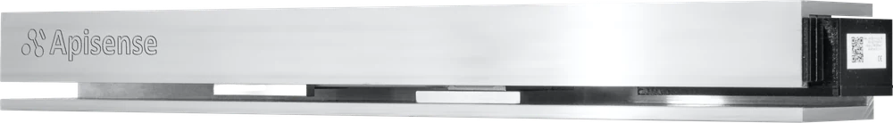
1 × Scalepod pierwszy ulunder the first hiveunter dem ersten Stocksous la première ruchebajo la primera colmenasotto la prima arniaunder første bikubeilk kovanın altınapod první úlpod prvý úľaz első kaptár alápod prvu košnicusub primul stupensimmäisen pesän alleonder de eerste kastunder första bikupanunder første bistadesob a primeira colmeiaκάτω από την πρώτη κυψέληتحت الخلية الأولى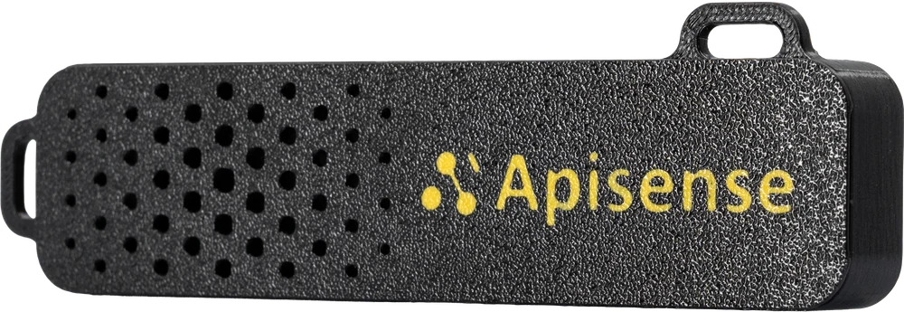
3 × VitalSensorpo jednym na ulone per hiveje einer pro Stockun par rucheuno por colmenauno per arniaén per bikubekovan başına birjeden na úljeden na úľkaptáronként egypo jedan na košnicucâte unul per stupyksi pesää kohtiéén per kasten per bikupaén pr. bistadeum por colmeiaένα ανά κυψέληواحد لكل خلية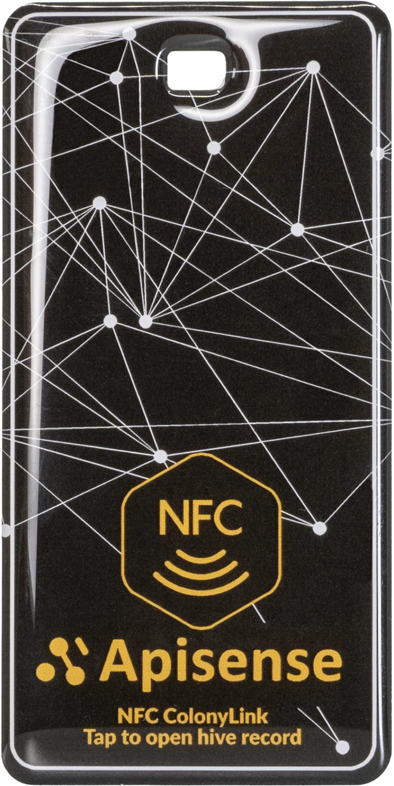
3 × ColonyLinkpo jednym na ulone per hiveje einer pro Stockun par rucheuno por colmenauno per arniaén per bikubekovan başına birjeden na úljeden na úľkaptáronként egypo jedan na košnicucâte unul per stupyksi pesää kohtiéén per kasten per bikupaén pr. bistadeum por colmeiaένα ανά κυψέληواحد لكل خلية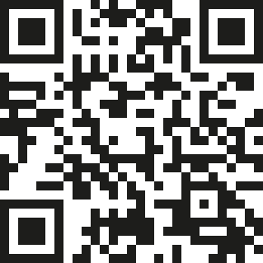
Pełna instrukcja ze wszystkimi ekranami aplikacji, w 20 językach — zeskanuj kod.Full guide with every app screen, in 20 languages — scan the code.Vollständige Anleitung mit allen App-Bildschirmen, in 20 Sprachen — Code scannen.Guide complet avec tous les écrans de l'application, en 20 langues : scannez le code.Guía completa con todas las pantallas de la app, en 20 idiomas: escanea el código.Guida completa con tutte le schermate dell'app, in 20 lingue: scansiona il codice.Fullstendig veiledning med alle skjermbildene i appen, på 20 språk — skann koden.Tüm uygulama ekranlarıyla tam kılavuz, 20 dilde — kodu tarayın.Celý návod se všemi obrazovkami aplikace, ve 20 jazycích — naskenujte kód.Kompletný návod so všetkými obrazovkami aplikácie, v 20 jazykoch — naskenuj kód.Teljes útmutató az alkalmazás összes képernyőjével, 20 nyelven — olvasd be a kódot.Cjelovite upute sa svim zaslonima aplikacije, na 20 jezika — skenirajte kod.Ghid complet cu toate ecranele aplicației, în 20 de limbi — scanați codul.Koko ohje kaikkine sovelluksen näyttöineen, 20 kielellä — skannaa koodi.Volledige handleiding met alle app-schermen, in 20 talen — scan de code.Fullständig guide med alla appens skärmar, på 20 språk — skanna koden.Komplet vejledning med alle appens skærmbilleder, på 20 sprog — scan koden.Guia completo com todas as telas do aplicativo, em 20 idiomas — escaneie o código.Πλήρεις οδηγίες με όλες τις οθόνες της εφαρμογής, σε 20 γλώσσες — σαρώστε τον κωδικό.الدليل الكامل مع جميع شاشات التطبيق، بعشرين لغة — امسح الرمز.
docs.apisense.ai/assembly
docs.apisense.ai/assembly
A · W aplikacjiIn the appIn der AppDans l'applicationEn la appNell'appI appenUygulamadaV aplikaciV aplikáciiAz alkalmazásbanU aplikacijiÎn aplicațieSovelluksessaIn de appI appenI appenNo aplicativoΣτην εφαρμογήفي التطبيق ok. 15 min, w domuabout 15 min, at homeca. 15 Min., zu Hauseenviron 15 min, à la maisonunos 15 min, en casacirca 15 min, a casaca. 15 min, hjemmeyaklaşık 15 dk, evdecca 15 min, domacca 15 min, domakb. 15 perc, otthonoko 15 min, kod kućecca. 15 min, acasănoin 15 min, kotonaca. 15 min, thuisca 15 min, hemmaca. 15 min, hjemmecerca de 15 min, em casaπερίπου 15 λεπτά, στο σπίτιنحو 15 دقيقة، في المنزل
01 · Pobierz aplikacjęDownload the appApp herunterladenTéléchargez l'applicationDescarga la aplicaciónScarica l'appLast ned appenUygulamayı indirinStáhněte si aplikaciStiahni aplikáciuTöltsd le az alkalmazástPreuzmite aplikacijuDescărcați aplicațiaLataa sovellusDownload de appLadda ner appenHent appenBaixe o aplicativoΚατεβάστε την εφαρμογήنزّل التطبيق
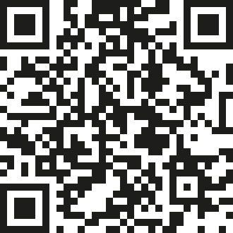
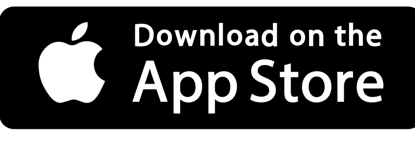
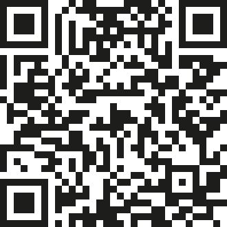
02 · KontoAccountKontoCompteCuentaAccountKontoHesapÚčetKontoFiókRačunContTiliAccountKontoKontoContaΛογαριασμόςالحسابZałóż konto w aplikacji (albo w przeglądarce: app.apisense.ai). Potrzebujesz tylko adresu e-mail.Create an account in the app (or in a browser: app.apisense.ai). All you need is an e-mail address.Erstelle ein Konto in der App (oder im Browser: app.apisense.ai). Du brauchst nur eine E-Mail-Adresse.Créez un compte dans l'application (ou dans le navigateur : app.apisense.ai). Une adresse e-mail suffit.Crea una cuenta en la app (o en el navegador: app.apisense.ai). Solo necesitas un correo electrónico.Crea un account nell'app (o nel browser: app.apisense.ai). Basta un indirizzo e-mail.Opprett en konto i appen (eller i nettleseren: app.apisense.ai). Du trenger bare en e-postadresse.Uygulamada (veya tarayıcıda: app.apisense.ai) bir hesap oluşturun. Yalnızca bir e-posta adresi yeterlidir.Vytvořte si účet v aplikaci (nebo v prohlížeči: app.apisense.ai). Stačí e-mailová adresa.Vytvor si konto v aplikácii (alebo v prehliadači: app.apisense.ai). Stačí e-mailová adresa.Hozz létre fiókot az alkalmazásban (vagy böngészőben: app.apisense.ai). Csak egy e-mail-cím kell hozzá.Izradite račun u aplikaciji (ili u pregledniku: app.apisense.ai). Dovoljna je e-mail adresa.Creați un cont în aplicație (sau în browser: app.apisense.ai). Aveți nevoie doar de o adresă de e-mail.Luo tili sovelluksessa (tai selaimessa: app.apisense.ai). Tarvitset vain sähköpostiosoitteen.Maak een account aan in de app (of in de browser: app.apisense.ai). Je hebt alleen een e-mailadres nodig.Skapa ett konto i appen (eller i webbläsaren: app.apisense.ai). Du behöver bara en e-postadress.Opret en konto i appen (eller i browseren: app.apisense.ai). Du skal kun bruge en e-mailadresse.Crie uma conta no aplicativo (ou no navegador: app.apisense.ai). Você só precisa de um e-mail.Δημιουργήστε λογαριασμό στην εφαρμογή (ή στον περιηγητή: app.apisense.ai). Αρκεί μια διεύθυνση e-mail.أنشئ حسابًا في التطبيق (أو في المتصفح: app.apisense.ai). لا تحتاج سوى عنوان بريد إلكتروني.
03 · Pasieka + HubApiary + HubBienenstand + HubRucher + HubColmenar + HubApiario + HubBigård + HubArılık + HubVčelnice + HubVčelnica + HubMéhes + HubPčelinjak + HubStupină + HubTarha + HubBijenstand + HubBigård + HubBigård + HubApiário + HubΜελισσοκομείο + Hubالمنحل + HubNaciśnij Dodaj pasiekę, wybierz Z urządzeniami i zeskanuj kod QR Huba. Pola wypełnią się same.Tap Add apiary, choose With devices and scan the Hub's QR code. The fields fill in by themselves.Tippe auf Bienenstand hinzufügen, wähle Mit Geräten und scanne den QR-Code des Hubs. Die Felder füllen sich von selbst.Appuyez sur Ajouter un rucher, choisissez Avec appareils et scannez le QR code du Hub. Les champs se remplissent tout seuls.Pulsa Añadir apiario, elige Con dispositivos y escanea el código QR del Hub. Los campos se rellenan solos.Tocca Aggiungi apiario, scegli Con dispositivi e scansiona il codice QR dell'Hub. I campi si compilano da soli.Trykk på Legg til bigård, velg Med enheter og skann QR-koden til Hub. Feltene fylles ut av seg selv.Arılık ekle öğesine dokunun, Cihazlarla seçeneğini seçin ve Hub'ın QR kodunu tarayın. Alanlar kendiliğinden dolar.Klepněte na Add apiary, zvolte With devices a naskenujte QR kód Hubu. Pole se vyplní sama.Stlač Add apiary, vyber With devices a naskenuj QR kód Hubu. Polia sa vyplnia samy.Koppints a(z) Add apiary gombra, válaszd a(z) With devices lehetőséget, és olvasd be a Hub QR-kódját. A mezők maguktól kitöltődnek.Dodirnite Add apiary, odaberite With devices i skenirajte QR kod Huba. Polja se popunjavaju sama.Apăsați Add apiary, alegeți With devices și scanați codul QR al Hubului. Câmpurile se completează singure.Napauta Add apiary, valitse With devices ja skannaa Hubin QR-koodi. Kentät täyttyvät itsestään.Tik op Add apiary, kies With devices en scan de QR-code van de Hub. De velden vullen zichzelf in.Tryck på Add apiary, välj With devices och skanna Hubbens QR-kod. Fälten fylls i av sig själva.Tryk på Add apiary, vælg With devices og scan Hubbens QR-kode. Felterne udfyldes af sig selv.Toque em Add apiary, escolha With devices e escaneie o código QR do Hub. Os campos se preenchem sozinhos.Πατήστε Add apiary, επιλέξτε With devices και σαρώστε τον κωδικό QR του Hub. Τα πεδία συμπληρώνονται μόνα τους.اضغط Add apiary، واختر With devices ثم امسح رمز QR الخاص بـHub. تُملأ الحقول تلقائيًا.
04 · Pierwszy ulFirst hiveErster StockPremière ruchePrimera colmenaPrima arniaFørste bikubeİlk kovanPrvní úlPrvý úľElső kaptárPrva košnicaPrimul stupEnsimmäinen pesäEerste kastFörsta bikupanFørste bistadePrimeira colmeiaΠρώτη κυψέληالخلية الأولىNaciśnij Dodaj ul, wpisz nazwę i liczbę ramek, potem zeskanuj kolejno: ColonyLink → VitalSensor → Scale. Zapis jest na ekranie Scale.Tap Add Hive, enter a name and the number of frames, then scan in order: ColonyLink → VitalSensor → Scale. Save is on the Scale screen.Tippe auf Bienenstock hinzufügen, gib Namen und Rähmchenzahl ein und scanne der Reihe nach: ColonyLink → VitalSensor → Scale. Speichern geht auf dem Scale-Bildschirm.Appuyez sur Ajouter une ruche, saisissez le nom et le nombre de cadres, puis scannez dans l'ordre : ColonyLink → VitalSensor → Scale. L'enregistrement se fait sur l'écran Scale.Pulsa Añadir colmena, escribe el nombre y el número de cuadros y escanea en orden: ColonyLink → VitalSensor → Scale. Se guarda en la pantalla Scale.Tocca Aggiungi arnia, inserisci nome e numero di telaini, poi scansiona in ordine: ColonyLink → VitalSensor → Scale. Il salvataggio è nella schermata Scale.Trykk på Legg til bikube, skriv inn navn og antall rammer, og skann i rekkefølge: ColonyLink → VitalSensor → Scale. Lagring skjer på Scale-skjermen.Kovan Ekle öğesine dokunun, adı ve çerçeve sayısını girin, ardından sırayla tarayın: ColonyLink → VitalSensor → Scale. Kayıt Scale ekranındadır.Klepněte na Add Hive, zadejte název a počet rámků, pak naskenujte postupně: ColonyLink → VitalSensor → Scale. Uložení je na obrazovce Scale.Stlač Add Hive, zadaj názov a počet rámikov, potom naskenuj postupne: ColonyLink → VitalSensor → Scale. Uloženie je na obrazovke Scale.Koppints a(z) Add Hive gombra, add meg a nevet és a keretek számát, majd olvasd be sorban: ColonyLink → VitalSensor → Scale. A mentés a Scale képernyőn van.Dodirnite Add Hive, upišite naziv i broj okvira, zatim skenirajte redom: ColonyLink → VitalSensor → Scale. Spremanje je na zaslonu Scale.Apăsați Add Hive, introduceți numele și numărul de rame, apoi scanați în ordine: ColonyLink → VitalSensor → Scale. Salvarea este pe ecranul Scale.Napauta Add Hive, anna nimi ja kehien määrä, skannaa sitten järjestyksessä: ColonyLink → VitalSensor → Scale. Tallennus on Scale-näytöllä.Tik op Add Hive, vul naam en aantal ramen in en scan op volgorde: ColonyLink → VitalSensor → Scale. Opslaan doe je op het Scale-scherm.Tryck på Add Hive, ange namn och antal ramar och skanna i ordning: ColonyLink → VitalSensor → Scale. Spara finns på Scale-skärmen.Tryk på Add Hive, indtast navn og antal rammer, og scan i rækkefølge: ColonyLink → VitalSensor → Scale. Gem findes på Scale-skærmen.Toque em Add Hive, informe o nome e o número de quadros e escaneie em ordem: ColonyLink → VitalSensor → Scale. O salvamento fica na tela Scale.Πατήστε Add Hive, δώστε όνομα και αριθμό πλαισίων και σαρώστε με τη σειρά: ColonyLink → VitalSensor → Scale. Η αποθήκευση γίνεται στην οθόνη Scale.اضغط Add Hive، وأدخل الاسم وعدد الإطارات، ثم امسح بالترتيب: ColonyLink ثم VitalSensor ثم Scale. الحفظ في شاشة Scale.
05 · Kolejne uleMore hivesWeitere StöckeRuches suivantesMás colmenasAltre arnieFlere bikuberDiğer kovanlarDalší úlyĎalšie úleTovábbi kaptárakDaljnje košniceUrmătorii stupiSeuraavat pesätVolgende kastenFler bikuporFlere bistaderPróximas colmeiasΕπόμενες κυψέλεςالخلايا التاليةTak samo, ale ekran Scale zostawiasz pusty — waga jest tylko pod pierwszym ulem.Same steps, but leave the Scale screen empty — the scale sits under the first hive only.Genauso, aber den Scale-Bildschirm leer lassen — die Waage steht nur unter dem ersten Stock.Même procédure, mais laissez l'écran Scale vide : la balance n'est que sous la première ruche.Igual, pero deja vacía la pantalla Scale: la báscula solo está bajo la primera colmena.Stessa procedura, ma lascia vuota la schermata Scale: la bilancia è solo sotto la prima arnia.Samme fremgangsmåte, men la Scale-skjermen stå tom — vekten står bare under den første bikuben.Aynı şekilde, ancak Scale ekranını boş bırakın — terazi yalnızca ilk kovanın altındadır.Stejně, ale obrazovku Scale nechte prázdnou — váha je jen pod prvním úlem.Rovnako, ale obrazovku Scale nechaj prázdnu — váha je len pod prvým úľom.Ugyanígy, de a Scale képernyőt hagyd üresen — mérleg csak az első kaptár alatt van.Isto, ali zaslon Scale ostavite prazan — vaga je samo pod prvom košnicom.La fel, dar lăsați ecranul Scale gol — cântarul este doar sub primul stup.Samoin, mutta jätä Scale-näyttö tyhjäksi — vaaka on vain ensimmäisen pesän alla.Hetzelfde, maar laat het Scale-scherm leeg — de weegschaal staat alleen onder de eerste kast.Samma sak, men lämna Scale-skärmen tom — vågen står bara under den första bikupan.Det samme, men lad Scale-skærmen stå tom — vægten står kun under det første bistade.Mesmo processo, mas deixe a tela Scale vazia — a balança fica só sob a primeira colmeia.Το ίδιο, αλλά αφήστε την οθόνη Scale κενή — η ζυγαριά βρίσκεται μόνο κάτω από την πρώτη κυψέλη.بالطريقة نفسها، لكن اترك شاشة Scale فارغة — الميزان تحت الخلية الأولى فقط.
Gdzie jest kod QR?Where is the QR code?Wo ist der QR-Code?Où est le QR code ?¿Dónde está el código QR?Dov'è il codice QR?Hvor er QR-koden?QR kodu nerede?Kde je QR kód?Kde je QR kód?Hol van a QR-kód?Gdje je QR kod?Unde este codul QR?Missä QR-koodi on?Waar zit de QR-code?Var sitter QR-koden?Hvor sidder QR-koden?Onde está o código QR?Πού είναι ο κωδικός QR;أين رمز QR؟Każde urządzenie ma własny kod. Pilnuj, który trafia do którego ula.Each device has its own code. Keep track of which one goes into which hive.Jedes Gerät hat einen eigenen Code. Behalte im Blick, welches in welchen Stock kommt.Chaque appareil a son propre code. Notez bien lequel va dans quelle ruche.Cada dispositivo tiene su propio código. Controla cuál va a cada colmena.Ogni dispositivo ha il proprio codice. Tieni nota di quale va in quale arnia.Hver enhet har sin egen kode. Hold styr på hvilken som skal i hvilken bikube.Her cihazın kendi kodu vardır. Hangisinin hangi kovana gittiğini takip edin.Každé zařízení má vlastní kód. Hlídejte si, které patří do kterého úlu.Každé zariadenie má vlastný kód. Sleduj, ktoré ide do ktorého úľa.Minden eszköznek saját kódja van. Jegyezd meg, melyik melyik kaptárba kerül.Svaki uređaj ima vlastiti kod. Pazite koji ide u koju košnicu.Fiecare dispozitiv are propriul cod. Rețineți care ajunge în care stup.Jokaisella laitteella on oma koodinsa. Pidä kirjaa siitä, mikä tulee mihinkin pesään.Elk apparaat heeft een eigen code. Houd bij welke in welke kast komt.Varje enhet har sin egen kod. Håll reda på vilken som ska i vilken bikupa.Hver enhed har sin egen kode. Hold styr på, hvilken der skal i hvilket bistade.Cada dispositivo tem seu próprio código. Anote qual vai em cada colmeia.Κάθε συσκευή έχει τον δικό της κωδικό. Σημειώνετε ποια πηγαίνει σε ποια κυψέλη.لكل جهاز رمزه الخاص. تتبّع أيها يدخل في أي خلية.Skanuj ZANIM zamontujesz.Scan BEFORE you mount.Scannen VOR der Montage.Scannez AVANT de monter.Escanea ANTES de montar.Scansiona PRIMA di montare.Skann FØR du monterer.Monte etmeden ÖNCE tarayın.Skenujte PŘED montáží.Skenuj PRED montážou.Beolvasás a felszerelés ELŐTT.Skenirajte PRIJE montaže.Scanați ÎNAINTE de montare.Skannaa ENNEN asennusta.Scan VÓÓR het monteren.Skanna INNAN du monterar.Scan FØR du monterer.Escaneie ANTES de montar.Σαρώστε ΠΡΙΝ την τοποθέτηση.امسح قبل التركيب.
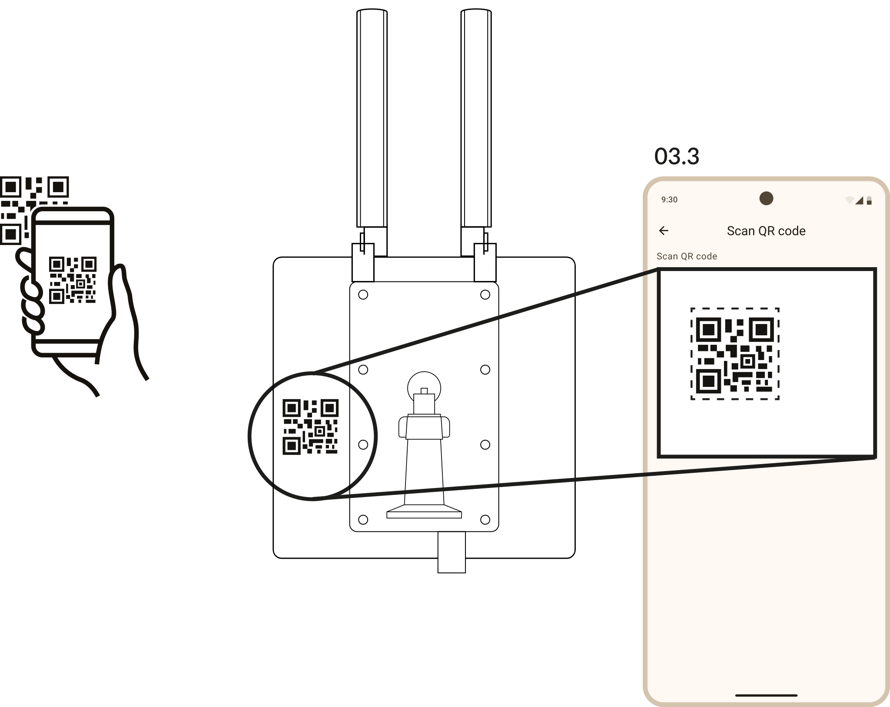
Hubnaklejka na obudowiesticker on the housingAufkleber am Gehäuseautocollant sur le boîtierpegatina en la carcasaadesivo sulla scoccaklistremerke på kabinettetgövdedeki etiketsamolepka na pouzdrunálepka na krytematrica a burkolatonnaljepnica na kućištuautocolant pe carcasătarra kotelossasticker op de behuizingdekal på höljetklistermærke på kabinettetadesivo na carcaçaαυτοκόλλητο στο περίβλημαملصق على الهيكل
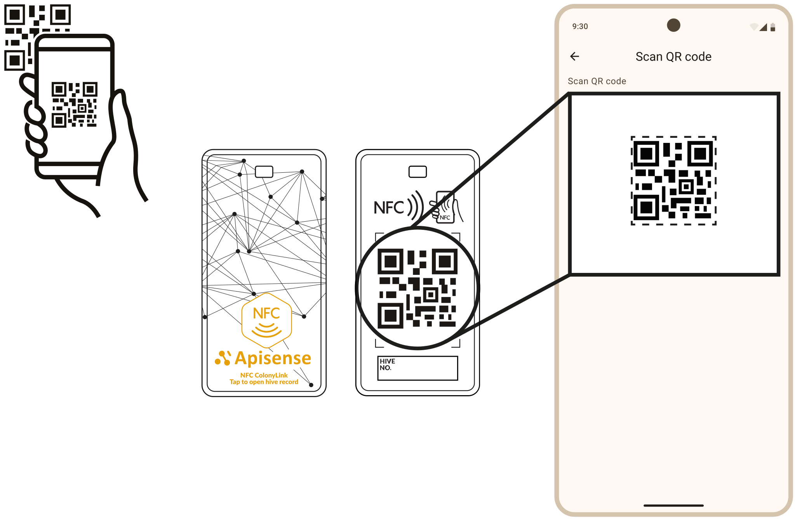
ColonyLinknadruk na naklejce (też NFC)printed on the sticker (NFC too)auf den Aufkleber gedruckt (auch NFC)imprimé sur l'autocollant (NFC aussi)impreso en la pegatina (también NFC)stampato sull'adesivo (anche NFC)trykt på klistremerket (også NFC)etiket üzerine basılı (NFC de var)natištěno na samolepce (i NFC)natlačené na nálepke (aj NFC)a matricára nyomtatva (NFC is)otisnuto na naljepnici (i NFC)imprimat pe autocolant (și NFC)painettu tarraan (myös NFC)gedrukt op de sticker (ook NFC)tryckt på dekalen (även NFC)trykt på klistermærket (også NFC)impresso no adesivo (NFC também)τυπωμένο στο αυτοκόλλητο (και NFC)مطبوع على الملصق (وNFC أيضًا)
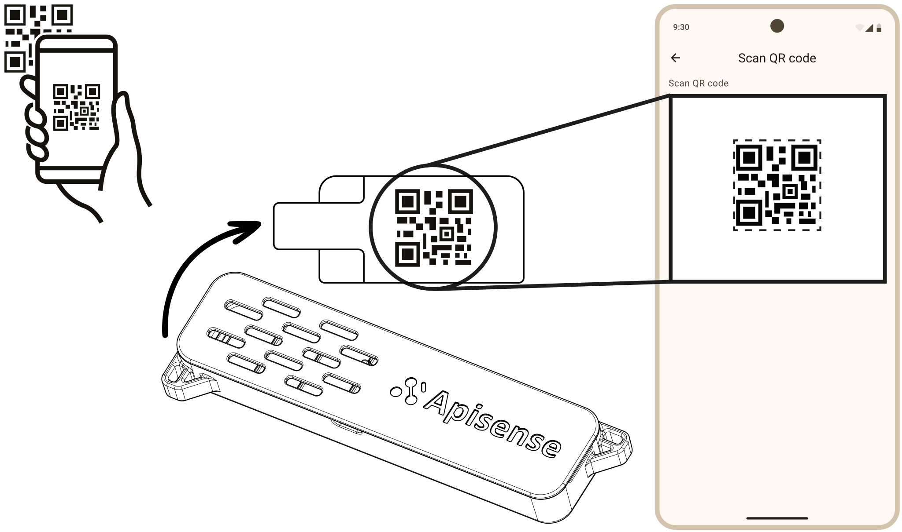
VitalSensortył obudowyback of the housingRückseite des Gehäusesdos du boîtierparte trasera de la carcasaretro della scoccabaksiden av kabinettetgövdenin arka yüzüzadní strana pouzdrazadná strana krytua burkolat hátoldalastražnja strana kućištaspatele carcaseikotelon takapuoliachterkant van de behuizinghöljets baksidabagsiden af kabinettetparte de trás da carcaçaπίσω πλευρά του περιβλήματοςالجهة الخلفية من الهيكل
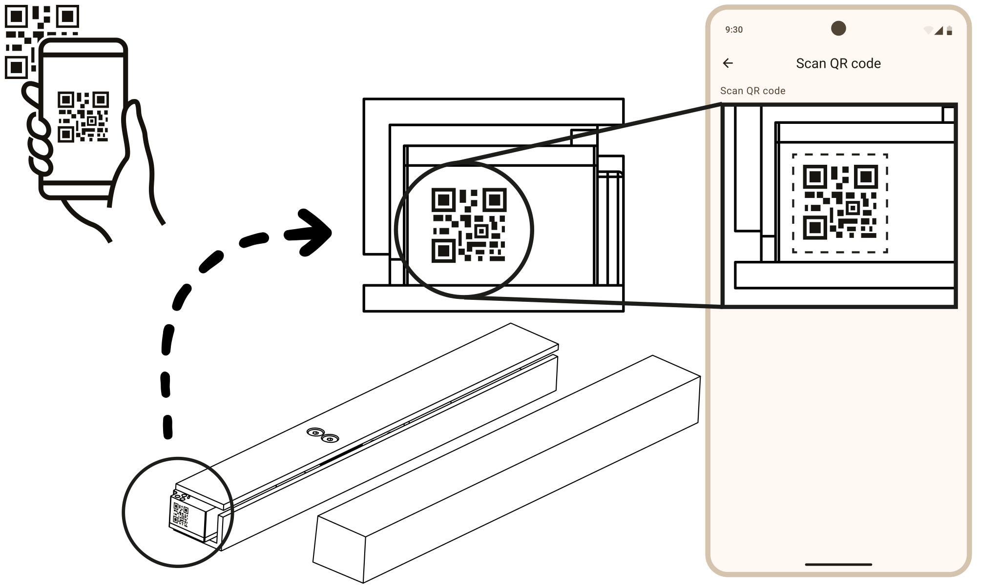
Scaleczoło belki z elektroniką (kantówka nie ma kodu)front of the electronics beam (the wooden bar has no code)Stirnseite des Elektronik-Balkens (die Holzleiste hat keinen Code)face avant de la barre électronique (la barre en bois n'a pas de code)frente de la barra con la electrónica (el listón de madera no tiene código)fronte della barra con l'elettronica (il listello di legno non ha codice)fronten på bjelken med elektronikk (trelisten har ingen kode)elektronikli kirişin ön yüzü (ahşap latada kod yok)čelo lišty s elektronikou (dřevěný hranol kód nemá)čelo lišty s elektronikou (drevený hranol kód nemá)az elektronikás gerenda homloklapja (a falécen nincs kód)čelo grede s elektronikom (drvena letva nema kod)fața grinzii cu electronică (șipca de lemn nu are cod)elektroniikkapalkin etupää (puurimassa ei ole koodia)voorkant van de balk met elektronica (de houten lat heeft geen code)framsidan av balken med elektronik (träribban har ingen kod)forsiden af bjælken med elektronik (trælisten har ingen kode)frente da barra com a eletrônica (o sarrafo de madeira não tem código)μπροστινή όψη της δοκού με τα ηλεκτρονικά (το ξύλινο δοκάρι δεν έχει κωδικό)واجهة العارضة التي تحوي الإلكترونيات (العارضة الخشبية بلا رمز)
B · W pasieceIn the apiaryAm BienenstandAu rucherEn el colmenarIn apiarioI bigårdenArılıktaNa včelniciNa včelniciA méhesbenU pčelinjakuÎn stupinăTarhallaOp de bijenstandI bigårdenI bigårdenNo apiárioΣτο μελισσοκομείοفي المنحل ok. 15 min · baterie są już w środku, niczego nie wkładaszabout 15 min · batteries are already inside, nothing to insertca. 15 Min. · Batterien sind schon drin, nichts einlegenenviron 15 min · les piles sont déjà en place, rien à insérerunos 15 min · las pilas ya están dentro, no hay que poner nadacirca 15 min · le batterie sono già dentro, non devi inserire nullaca. 15 min · batteriene er allerede i, du setter ikke inn noeyaklaşık 15 dk · piller takılı gelir, hiçbir şey takmanız gerekmezcca 15 min · baterie už jsou uvnitř, nic nevkládátecca 15 min · batérie sú už vnútri, nič nevkladáškb. 15 perc · az elemek már benne vannak, semmit nem kell behelyeznioko 15 min · baterije su već unutra, ništa ne umećetecca. 15 min · bateriile sunt deja înăuntru, nu introduceți nimicnoin 15 min · paristot ovat jo sisällä, mitään ei tarvitse asettaaca. 15 min · batterijen zitten er al in, niets plaatsenca 15 min · batterierna sitter redan i, inget att sätta ica. 15 min · batterierne sidder allerede i, intet at isættecerca de 15 min · as pilhas já estão dentro, não é preciso colocar nadaπερίπου 15 λεπτά · οι μπαταρίες είναι ήδη μέσα, δεν τοποθετείτε τίποταنحو 15 دقيقة · البطاريات مركّبة مسبقًا، لا تُدخل شيئًا
06 · HubZamontuj Hub na słońcuMount the Hub in the sunHub in der Sonne montierenMontez le Hub au soleilMonta el Hub al solMonta l'Hub al soleMonter Hub i solenHub'ı güneşe monte edinNamontujte Hub na slunceNamontuj Hub na slnkoSzereld a Hubot napraMontirajte Hub na sunceMontați Hubul la soareAsenna Hub aurinkoonMonteer de Hub in de zonMontera Hub i solenMontér Hub i solenInstale o Hub ao solΤοποθετήστε το Hub στον ήλιοركّب Hub في الشمس
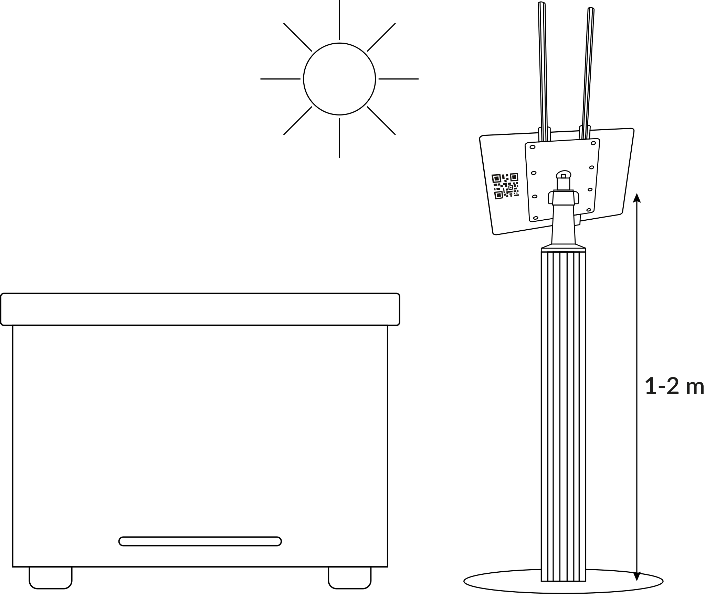
- 1–2 mnad ziemią, na uchwycie aparatowym z zestawu. Słupek, drzewo, drewno — nie metal.above the ground, on the camera mount from the kit. Post, tree, wood — not metal.über dem Boden, auf der Kamerahalterung aus dem Set. Pfosten, Baum, Holz — kein Metall.au-dessus du sol, sur le support photo du kit. Poteau, arbre, bois : pas de métal.sobre el suelo, en el soporte de cámara del kit. Poste, árbol, madera: no metal.da terra, sul supporto per fotocamera del kit. Palo, albero, legno: non metallo.over bakken, på kamerafestet fra settet. Stolpe, tre, treverk — ikke metall.yerden yükseklik, setteki kamera aparatı ile. Direk, ağaç, ahşap — metal değil.nad zemí, na držáku pro fotoaparát ze sady. Sloupek, strom, dřevo — ne kov.nad zemou, na držiaku pre fotoaparát zo sady. Stĺpik, strom, drevo — nie kov.a talaj felett, a készlet kameratartóján. Oszlop, fa, faanyag — fém nem.iznad tla, na nosaču za kameru iz kompleta. Stup, drvo, drvena građa — ne metal.deasupra solului, pe suportul de cameră din kit. Stâlp, copac, lemn — nu metal.maanpinnasta, sarjan kamerakiinnikkeellä. Tolppa, puu, puutavara — ei metallia.boven de grond, op de camerahouder uit de set. Paal, boom, hout — geen metaal.över marken, på kamerafästet från satsen. Stolpe, träd, trä — inte metall.over jorden, på kamerabeslaget fra sættet. Pæl, træ, tømmer — ikke metal.acima do solo, no suporte de câmera do kit. Poste, árvore, madeira — não metal.πάνω από το έδαφος, στη βάση κάμερας του κιτ. Στύλος, δέντρο, ξύλο — όχι μέταλλο.فوق الأرض، على حامل الكاميرا المرفق. عمود أو شجرة أو خشب — لا معدن.
- 30–50°nachylenie panelu w stronę słońca, bez cienia.panel tilt towards the sun, no shade.Neigung des Panels zur Sonne, ohne Schatten.inclinaison du panneau vers le soleil, sans ombre.inclinación del panel hacia el sol, sin sombra.inclinazione del pannello verso il sole, senza ombra.panelets helning mot solen, uten skygge.panel eğimi güneşe doğru, gölgesiz.sklon panelu ke slunci, bez stínu.sklon panela k slnku, bez tieňa.a panel dőlése a nap felé, árnyék nélkül.nagib panela prema suncu, bez sjene.înclinarea panoului spre soare, fără umbră.paneelin kallistus aurinkoon päin, ei varjoa.hellingshoek van het paneel naar de zon, geen schaduw.panelens lutning mot solen, utan skugga.panelets hældning mod solen, uden skygge.inclinação do painel para o sol, sem sombra.κλίση του πάνελ προς τον ήλιο, χωρίς σκιά.ميل اللوح نحو الشمس، دون ظل.
- AntenyAntennasAntennenAntennesAntenasAntenneAntennerAntenlerAntényAntényAntennákAnteneAnteneAntennitAntennesAntennerAntennerAntenasΚεραίεςالهوائياتpionowo do góry. Złącza BLE i LTE są różne, nie pomylisz.pointing straight up. The BLE and LTE connectors differ, you cannot mix them up.senkrecht nach oben. BLE- und LTE-Anschluss sind verschieden, nicht zu verwechseln.à la verticale, vers le haut. Les connecteurs BLE et LTE sont différents, impossible de les confondre.en vertical, hacia arriba. Los conectores BLE y LTE son distintos, no se confunden.verticali, verso l'alto. I connettori BLE e LTE sono diversi, impossibile confonderli.loddrett opp. BLE- og LTE-kontaktene er ulike, de kan ikke forveksles.dikey, yukarı doğru. BLE ve LTE konnektörleri farklıdır, karıştırılmaz.svisle nahoru. Konektory BLE a LTE jsou různé, nezaměníte je.zvislo nahor. Konektory BLE a LTE sú rôzne, nezameníš ich.függőlegesen felfelé. A BLE és LTE csatlakozó különböző, nem keverhető össze.okomito prema gore. Priključci BLE i LTE su različiti, ne mogu se zamijeniti.vertical, în sus. Conectorii BLE și LTE sunt diferiți, nu pot fi încurcați.pystysuoraan ylös. BLE- ja LTE-liittimet ovat erilaiset, niitä ei voi sekoittaa.recht omhoog. De BLE- en LTE-aansluitingen verschillen, je kunt ze niet verwisselen.rakt uppåt. BLE- och LTE-kontakterna är olika, de går inte att förväxla.lodret opad. BLE- og LTE-stikkene er forskellige, de kan ikke forveksles.na vertical, para cima. Os conectores BLE e LTE são diferentes, não dá para confundir.κατακόρυφα προς τα πάνω. Οι υποδοχές BLE και LTE διαφέρουν, δεν μπερδεύονται.عموديًا إلى الأعلى. موصلا BLE وLTE مختلفان، لا يمكن الخلط بينهما.
- ≤ 35 mdo najdalszego ula z czujnikiem (zasięg BLE).to the farthest hive with a sensor (BLE range).bis zum entferntesten Stock mit Sensor (BLE-Reichweite).jusqu'à la ruche équipée la plus éloignée (portée BLE).hasta la colmena con sensor más lejana (alcance BLE).dall'arnia con sensore più lontana (portata BLE).til den fjerneste bikuben med sensor (BLE-rekkevidde).sensörlü en uzak kovana kadar (BLE menzili).k nejvzdálenějšímu úlu se senzorem (dosah BLE).k najvzdialenejšiemu úľu so senzorom (dosah BLE).a legtávolabbi szenzoros kaptárig (BLE hatótáv).do najudaljenije košnice sa senzorom (domet BLE).până la cel mai îndepărtat stup cu senzor (raza BLE).kauimmaiseen anturilliseen pesään (BLE-kantama).tot de verste kast met sensor (BLE-bereik).till den bortersta bikupan med sensor (BLE-räckvidd).til det fjerneste bistade med sensor (BLE-rækkevidde).até a colmeia com sensor mais distante (alcance BLE).έως την πιο μακρινή κυψέλη με αισθητήρα (εμβέλεια BLE).إلى أبعد خلية فيها مستشعر (مدى BLE).
07 · ScaleUstaw Scale pod pierwszym ulemPlace the Scale under the first hiveScale unter den ersten Stock stellenPlacez la Scale sous la première rucheColoca la Scale bajo la primera colmenaSistema la Scale sotto la prima arniaSett Scale under den første bikubenScale'i ilk kovanın altına yerleştirinUmístěte Scale pod první úlUmiestni Scale pod prvý úľTedd a Scale-t az első kaptár aláPostavite Scale pod prvu košnicuAșezați Scale sub primul stupAseta Scale ensimmäisen pesän alleZet de Scale onder de eerste kastStäll Scale under den första bikupanSæt Scale under det første bistadeColoque a Scale sob a primeira colmeiaΤοποθετήστε τη Scale κάτω από την πρώτη κυψέληضع Scale تحت الخلية الأولى
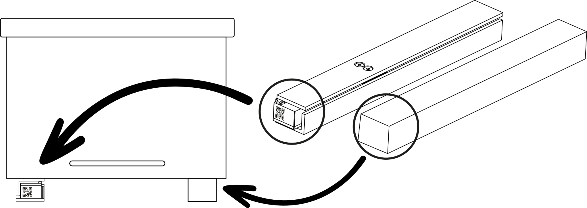
- 1Scale na stabilnym, równym podłożu, prostopadle do ramek.Scale on firm, level ground, perpendicular to the frames.Scale auf festem, ebenem Untergrund, quer zu den Rähmchen.Scale sur un sol stable et plan, perpendiculaire aux cadres.Scale sobre suelo estable y nivelado, perpendicular a los cuadros.Scale su un fondo stabile e in piano, perpendicolare ai telaini.Scale på stabilt, jevnt underlag, vinkelrett på rammene.Scale sağlam, düz bir zemine, çerçevelere dik olacak şekilde.Scale na stabilním, rovném podkladu, kolmo k rámkům.Scale na stabilnom, rovnom podklade, kolmo na rámiky.A Scale stabil, sík alapon, a keretekre merőlegesen.Scale na stabilnoj, ravnoj podlozi, okomito na okvire.Scale pe o suprafață stabilă și plană, perpendicular pe rame.Scale tukevalle, tasaiselle alustalle, kohtisuoraan kehiin nähden.Scale op een stevige, vlakke ondergrond, haaks op de ramen.Scale på stabilt, plant underlag, vinkelrätt mot ramarna.Scale på stabilt, plant underlag, vinkelret på rammerne.Scale em piso firme e nivelado, perpendicular aos quadros.Η Scale σε σταθερό, επίπεδο έδαφος, κάθετα στα πλαίσια.ضع Scale على أرضية ثابتة ومستوية، عموديًا على الإطارات.
- 2Drewniana kantówka równolegle — ciężar rozłożony równo.Wooden bar parallel to it — weight spread evenly.Holzleiste parallel dazu — Gewicht gleichmäßig verteilt.Barre en bois parallèle : poids réparti uniformément.Listón de madera en paralelo: peso repartido por igual.Listello di legno parallelo: peso distribuito in modo uniforme.Trelisten parallelt — vekten jevnt fordelt.Ahşap lata paralel — ağırlık eşit dağılsın.Dřevěný hranol rovnoběžně — váha rozložená rovnoměrně.Drevený hranol rovnobežne — váha rozložená rovnomerne.A faléc párhuzamosan — a súly egyenletesen oszlik el.Drvena letva paralelno — težina ravnomjerno raspoređena.Șipca de lemn paralel — greutatea distribuită uniform.Puurima samansuuntaisesti — paino jakautuu tasaisesti.Houten lat evenwijdig — gewicht gelijk verdeeld.Träribban parallellt — vikten jämnt fördelad.Trælisten parallelt — vægten jævnt fordelt.Sarrafo de madeira em paralelo — peso distribuído por igual.Το ξύλινο δοκάρι παράλληλα — το βάρος κατανέμεται ομοιόμορφα.العارضة الخشبية موازية لها — يتوزع الوزن بالتساوي.
- 3Postaw ul i sprawdź, czy obciążenie nadal rozkłada się równo.Set the hive on top and check the load is still spread evenly.Stock aufsetzen und prüfen, ob die Last weiterhin gleichmäßig verteilt ist.Posez la ruche et vérifiez que la charge reste bien répartie.Coloca la colmena y comprueba que la carga sigue repartida por igual.Appoggia l'arnia e controlla che il carico resti distribuito in modo uniforme.Sett bikuben på og sjekk at lasten fortsatt er jevnt fordelt.Kovanı yerleştirin ve yükün hâlâ eşit dağıldığını kontrol edin.Postavte úl a zkontrolujte, že je zatížení stále rovnoměrné.Postav úľ a skontroluj, či je zaťaženie stále rovnomerné.Tedd rá a kaptárt, és ellenőrizd, hogy a terhelés továbbra is egyenletes.Postavite košnicu i provjerite je li opterećenje i dalje ravnomjerno.Așezați stupul și verificați dacă sarcina rămâne distribuită uniform.Nosta pesä päälle ja tarkista, että kuorma jakautuu yhä tasaisesti.Zet de kast erop en controleer of de belasting nog gelijk verdeeld is.Ställ bikupan på och kontrollera att lasten fortfarande är jämnt fördelad.Sæt bistadet på, og tjek at belastningen stadig er jævnt fordelt.Coloque a colmeia e verifique se a carga continua distribuída por igual.Τοποθετήστε την κυψέλη και ελέγξτε ότι το φορτίο παραμένει ομοιόμορφο.ضع الخلية وتأكد من أن الحمل ما زال موزعًا بالتساوي.
08 · VitalSensorZamontuj VitalSensor na ramceMount the VitalSensor on a frameVitalSensor am Rähmchen montierenMontez le VitalSensor sur un cadreMonta el VitalSensor en un cuadroMonta il VitalSensor su un telainoMonter VitalSensor på en rammeVitalSensor'ü çerçeveye takınNamontujte VitalSensor na rámekNamontuj VitalSensor na rámikSzereld a VitalSensort egy keretreMontirajte VitalSensor na okvirMontați VitalSensor pe o ramăAsenna VitalSensor kehäänMonteer de VitalSensor op een raamMontera VitalSensor på en ramMontér VitalSensor på en rammeInstale o VitalSensor em um quadroΤοποθετήστε το VitalSensor σε πλαίσιοركّب VitalSensor على إطار
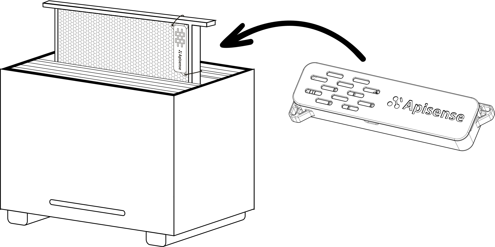
- 1Osadź na centralnej ramce (w kłębie), stabilnie.Seat it on the central frame (in the cluster), firmly.Auf dem mittleren Rähmchen (im Bienensitz) fest aufsetzen.Fixez-le sur le cadre central (dans la grappe), fermement.Colócalo en el cuadro central (en la piña), con firmeza.Fissalo sul telaino centrale (nel glomere), in modo stabile.Sett den på den midterste rammen (i klasen), stødig.Merkezdeki çerçeveye (arı salkımına) sağlamca oturtun.Nasaďte ho na střední rámek (v chomáči), pevně.Nasaď ho na stredný rámik (v chumáči), pevne.Ültesd a középső keretre (a méhfürtbe), stabilan.Postavite ga na središnji okvir (u klupko), čvrsto.Fixați-l pe rama centrală (în ghem), ferm.Aseta se keskimmäiseen kehään (pesäpalloon), tukevasti.Zet hem op het middelste raam (in de tros), stevig.Sätt den på den mittersta ramen (i klustret), stadigt.Sæt den på den midterste ramme (i klyngen), stabilt.Encaixe-o no quadro central (no cacho), com firmeza.Στερεώστε το στο κεντρικό πλαίσιο (στη σφαίρα των μελισσών), σταθερά.ثبّته على الإطار الأوسط (داخل عنقود النحل) بإحكام.
- 2Pionowo, otworami w obudowie do góry. Kod QR zostaje z tyłu.Vertically, housing openings facing up. The QR code stays at the back.Senkrecht, Gehäuseöffnungen nach oben. Der QR-Code bleibt hinten.À la verticale, ouvertures du boîtier vers le haut. Le QR code reste au dos.En vertical, con las aberturas de la carcasa hacia arriba. El código QR queda detrás.In verticale, con le aperture della scocca verso l'alto. Il codice QR resta sul retro.Loddrett, med åpningene i kabinettet opp. QR-koden blir på baksiden.Dikey, gövdedeki delikler yukarı bakacak şekilde. QR kodu arkada kalır.Svisle, otvory v pouzdru nahoru. QR kód zůstává vzadu.Zvislo, otvormi v kryte nahor. QR kód zostáva vzadu.Függőlegesen, a burkolat nyílásaival felfelé. A QR-kód hátul marad.Okomito, otvorima na kućištu prema gore. QR kod ostaje straga.Vertical, cu orificiile carcasei în sus. Codul QR rămâne pe spate.Pystysuoraan, kotelon aukot ylöspäin. QR-koodi jää taakse.Verticaal, met de openingen in de behuizing naar boven. De QR-code blijft aan de achterkant.Lodrätt, med höljets öppningar uppåt. QR-koden sitter kvar på baksidan.Lodret, med kabinettets åbninger opad. QR-koden bliver på bagsiden.Na vertical, com as aberturas da carcaça para cima. O código QR fica atrás.Κατακόρυφα, με τα ανοίγματα του περιβλήματος προς τα πάνω. Ο κωδικός QR μένει πίσω.عموديًا، بحيث تكون فتحات الهيكل إلى الأعلى. يبقى رمز QR في الخلف.
- 3Ramka w środek korpusu gniazdowego, żeby nie zakłócać wentylacji.Frame into the middle of the brood box, so ventilation is not disturbed.Rähmchen in die Mitte der Brutzarge, damit die Lüftung nicht gestört wird.Cadre au centre du corps de ruche, pour ne pas gêner la ventilation.Cuadro en el centro de la cámara de cría, para no alterar la ventilación.Telaino al centro del nido, per non disturbare la ventilazione.Rammen midt i yngelrommet, så ventilasjonen ikke forstyrres.Çerçeveyi kuluçka gövdesinin ortasına yerleştirin, havalandırma bozulmasın.Rámek doprostřed plodiště, aby se nenarušilo větrání.Rámik do stredu plodiska, aby sa nenarušilo vetranie.A keret a fészek közepébe kerüljön, hogy ne zavarja a szellőzést.Okvir u sredinu plodišta, da se ne ometa ventilacija.Rama în mijlocul cuibului, ca să nu perturbe ventilația.Kehä pesäosaston keskelle, jotta tuuletus ei häiriinny.Raam in het midden van de broedkamer, zodat de ventilatie niet wordt verstoord.Ramen mitt i yngelrummet, så att ventilationen inte störs.Rammen midt i yngelrummet, så ventilationen ikke forstyrres.Quadro no centro do ninho, para não atrapalhar a ventilação.Το πλαίσιο στο κέντρο της γονοφωλιάς, ώστε να μην διαταράσσεται ο αερισμός.ضع الإطار في منتصف صندوق الحضنة حتى لا تتعطل التهوية.
09 · ColonyLinkNaklej ColonyLink na front ulaStick the ColonyLink on the hive frontColonyLink vorn auf den Stock klebenCollez le ColonyLink sur l'avant de la ruchePega el ColonyLink en el frente de la colmenaApplica il ColonyLink sul fronte dell'arniaFest ColonyLink foran på bikubenColonyLink'i kovanın ön yüzüne yapıştırınNalepte ColonyLink na čelo úluNalep ColonyLink na čelo úľaRagaszd a ColonyLinket a kaptár elejéreZalijepite ColonyLink na prednju stranu košniceLipiți ColonyLink pe fața stupuluiKiinnitä ColonyLink pesän etuseinäänPlak de ColonyLink op de voorkant van de kastFäst ColonyLink på bikupans framsidaSæt ColonyLink på forsiden af bistadetCole o ColonyLink na frente da colmeiaΚολλήστε το ColonyLink στην πρόσοψη της κυψέληςألصق ColonyLink على واجهة الخلية
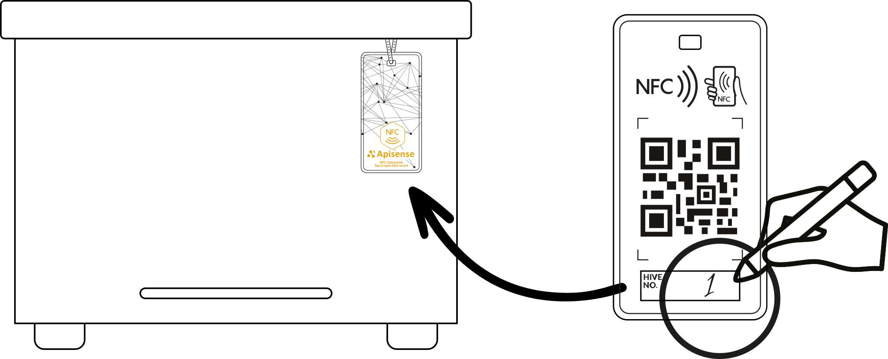
- 1Miejsce płaskie, czyste, suche, widoczne przy pracy.A flat, clean, dry spot, visible while you work.Eine ebene, saubere, trockene Stelle, beim Arbeiten gut sichtbar.Un endroit plat, propre et sec, visible pendant le travail.Un sitio plano, limpio y seco, visible mientras trabajas.Un punto piano, pulito e asciutto, visibile mentre lavori.Et flatt, rent og tørt sted, synlig mens du arbeider.Düz, temiz ve kuru bir yer, çalışırken görünür olsun.Místo rovné, čisté a suché, viditelné při práci.Miesto rovné, čisté a suché, viditeľné pri práci.Sima, tiszta, száraz hely, munka közben is látható.Mjesto ravno, čisto i suho, vidljivo tijekom rada.Un loc plat, curat și uscat, vizibil în timpul lucrului.Tasainen, puhdas ja kuiva kohta, näkyvissä työskennellessä.Een vlakke, schone, droge plek, zichtbaar tijdens het werk.En plan, ren och torr plats, synlig medan du arbetar.Et fladt, rent og tørt sted, synligt mens du arbejder.Um local plano, limpo e seco, visível durante o trabalho.Σημείο επίπεδο, καθαρό, στεγνό, ορατό κατά την εργασία.موضع مستوٍ ونظيف وجاف، مرئي أثناء العمل.
- 2Dociśnij na całej powierzchni.Press it down over the whole surface.Auf der ganzen Fläche andrücken.Appuyez sur toute la surface.Presiona sobre toda la superficie.Premi su tutta la superficie.Trykk til over hele flaten.Tüm yüzeye bastırın.Přitlačte po celé ploše.Pritlač po celej ploche.Nyomd rá a teljes felületen.Pritisnite po cijeloj površini.Apăsați pe toată suprafața.Paina kiinni koko pinnalta.Druk hem over het hele oppervlak aan.Tryck fast över hela ytan.Tryk fast over hele fladen.Pressione em toda a superfície.Πιέστε σε όλη την επιφάνεια.اضغط عليه على كامل السطح.
- 3Bez baterii i konfiguracji. Przyłóż telefon (NFC) — otwiera dane ula, też w rękawicach.No battery, no setup. Hold your phone to it (NFC) — it opens the hive's data, even with gloves on.Keine Batterie, keine Einrichtung. Handy anhalten (NFC) — öffnet die Daten des Stocks, auch mit Handschuhen.Sans pile ni configuration. Approchez le téléphone (NFC) : les données de la ruche s'ouvrent, même avec des gants.Sin pila ni configuración. Acerca el teléfono (NFC): abre los datos de la colmena, incluso con guantes.Senza batteria né configurazione. Avvicina il telefono (NFC): apre i dati dell'arnia, anche con i guanti.Uten batteri og oppsett. Hold telefonen inntil (NFC) — åpner bikubens data, også med hansker.Pil ve kurulum gerektirmez. Telefonu yaklaştırın (NFC) — eldivenle bile kovan verilerini açar.Bez baterie a nastavení. Přiložte telefon (NFC) — otevře data úlu, i v rukavicích.Bez batérie a nastavenia. Prilož telefón (NFC) — otvorí dáta úľa, aj v rukaviciach.Elem és beállítás nélkül. Érintsd hozzá a telefont (NFC) — megnyitja a kaptár adatait, kesztyűben is.Bez baterije i postavljanja. Prislonite telefon (NFC) — otvara podatke košnice, i u rukavicama.Fără baterie și fără configurare. Apropiați telefonul (NFC) — deschide datele stupului, chiar și cu mănuși.Ei paristoa, ei asetuksia. Vie puhelin lähelle (NFC) — avaa pesän tiedot, myös hanskat kädessä.Geen batterij, geen instellingen. Houd je telefoon ertegen (NFC) — opent de gegevens van de kast, ook met handschoenen.Inget batteri, ingen inställning. Håll telefonen mot den (NFC) — öppnar bikupans data, även med handskar.Intet batteri, ingen opsætning. Hold telefonen mod den (NFC) — åbner bistadets data, også med handsker.Sem pilha nem configuração. Aproxime o celular (NFC) — abre os dados da colmeia, mesmo de luvas.Χωρίς μπαταρία ή ρύθμιση. Πλησιάστε το τηλέφωνο (NFC) — ανοίγει τα δεδομένα της κυψέλης, ακόμη και με γάντια.بلا بطارية ولا إعداد. قرّب الهاتف (NFC) — تُفتح بيانات الخلية، حتى بالقفازات.
10 · GotoweDoneFertigTerminéListoFattoFerdigTamamHotovoHotovoKészGotovoGataValmisKlaarKlartFærdigProntoΈτοιμοتمPo ok. 2 godzinach w aplikacji pojawią się pierwsze odczyty — status Brak danych zniknie. Nadal brak po kilku godzinach? Sprawdź zasięg do Huba, słońce na panelu i docs.apisense.ai/manual/configuration/troubleshooting.After about 2 hours the first readings appear in the app — the No data status goes away. Still nothing after a few hours? Check the range to the Hub, sun on the panel and docs.apisense.ai/manual/configuration/troubleshooting.Nach ca. 2 Stunden erscheinen die ersten Messwerte in der App — der Status Keine Daten verschwindet. Nach einigen Stunden immer noch nichts? Prüfe die Reichweite zum Hub, Sonne auf dem Panel und docs.apisense.ai/manual/configuration/troubleshooting.Après environ 2 heures, les premières mesures apparaissent dans l'application : le statut Pas de données disparaît. Toujours rien après quelques heures ? Vérifiez la portée jusqu'au Hub, le soleil sur le panneau et docs.apisense.ai/manual/configuration/troubleshooting.Tras unas 2 horas aparecen las primeras lecturas en la app: el estado Sin datos desaparece. ¿Sigue sin haber datos pasadas unas horas? Comprueba el alcance hasta el Hub, el sol en el panel y docs.apisense.ai/manual/configuration/troubleshooting.Dopo circa 2 ore le prime letture compaiono nell'app: lo stato Nessun dato sparisce. Ancora nulla dopo qualche ora? Controlla la portata verso l'Hub, il sole sul pannello e docs.apisense.ai/manual/configuration/troubleshooting.Etter ca. 2 timer dukker de første målingene opp i appen — statusen Ingen data forsvinner. Fortsatt ingenting etter noen timer? Sjekk rekkevidden til Hub, sol på panelet og docs.apisense.ai/manual/configuration/troubleshooting.Yaklaşık 2 saat sonra ilk ölçümler uygulamada görünür — Veri yok durumu kaybolur. Birkaç saat sonra hâlâ veri yok mu? Hub'a olan mesafeyi, paneldeki güneşi ve docs.apisense.ai/manual/configuration/troubleshooting adresini kontrol edin.Po cca 2 hodinách se v aplikaci objeví první odečty — stav No data zmizí. Stále nic ani po několika hodinách? Zkontrolujte dosah k Hubu, slunce na panelu a docs.apisense.ai/manual/configuration/troubleshooting.Po cca 2 hodinách sa v aplikácii objavia prvé odčítania — stav No data zmizne. Stále nič ani po niekoľkých hodinách? Skontroluj dosah k Hubu, slnko na paneli a docs.apisense.ai/manual/configuration/troubleshooting.Kb. 2 óra múlva megjelennek az első adatok az alkalmazásban — a(z) No data állapot eltűnik. Néhány óra után még mindig semmi? Ellenőrizd a Hub hatótávját, a napot a panelen és a docs.apisense.ai/manual/configuration/troubleshooting oldalt.Nakon otprilike 2 sata u aplikaciji se pojavljuju prva očitanja — status No data nestaje. I dalje ništa nakon nekoliko sati? Provjerite domet do Huba, sunce na panelu i docs.apisense.ai/manual/configuration/troubleshooting.După cca. 2 ore apar primele citiri în aplicație — starea No data dispare. Tot nimic după câteva ore? Verificați raza până la Hub, soarele pe panou și docs.apisense.ai/manual/configuration/troubleshooting.Noin 2 tunnin kuluttua ensimmäiset lukemat näkyvät sovelluksessa — tila No data häviää. Ei vieläkään mitään muutaman tunnin jälkeen? Tarkista kantama Hubiin, aurinko paneelilla ja docs.apisense.ai/manual/configuration/troubleshooting.Na ongeveer 2 uur verschijnen de eerste metingen in de app — de status No data verdwijnt. Na een paar uur nog niets? Controleer het bereik tot de Hub, zon op het paneel en docs.apisense.ai/manual/configuration/troubleshooting.Efter ca 2 timmar dyker de första mätvärdena upp i appen — statusen No data försvinner. Fortfarande inget efter några timmar? Kontrollera räckvidden till Hub, sol på panelen och docs.apisense.ai/manual/configuration/troubleshooting.Efter ca. 2 timer dukker de første målinger op i appen — status No data forsvinder. Stadig intet efter nogle timer? Tjek rækkevidden til Hub, sol på panelet og docs.apisense.ai/manual/configuration/troubleshooting.Após cerca de 2 horas as primeiras leituras aparecem no aplicativo — o status No data desaparece. Ainda nada depois de algumas horas? Verifique o alcance até o Hub, o sol no painel e docs.apisense.ai/manual/configuration/troubleshooting.Μετά από περίπου 2 ώρες εμφανίζονται οι πρώτες μετρήσεις στην εφαρμογή — η κατάσταση No data εξαφανίζεται. Ακόμη τίποτα μετά από μερικές ώρες; Ελέγξτε την εμβέλεια έως το Hub, τον ήλιο στο πάνελ και το docs.apisense.ai/manual/configuration/troubleshooting.بعد نحو ساعتين تظهر أول القراءات في التطبيق — وتختفي الحالة No data. لا شيء بعد بضع ساعات؟ تحقق من المدى إلى Hub، ومن الشمس على اللوح، ومن docs.apisense.ai/manual/configuration/troubleshooting.
bee@apisense.ai
docs.apisense.ai
docs.apisense.ai